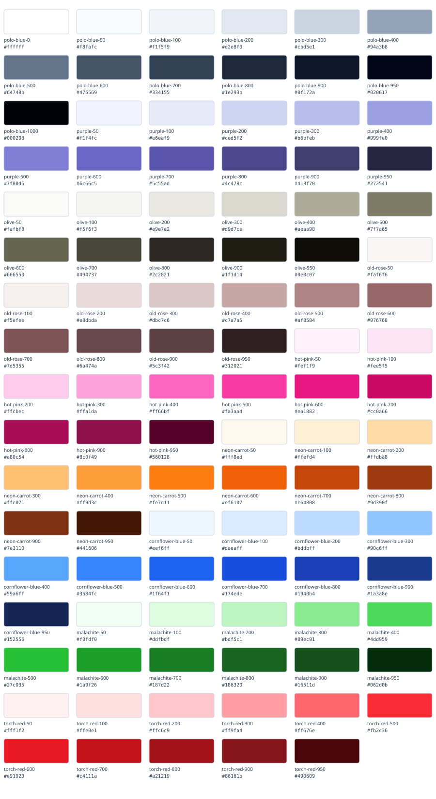

Components for everyday tasks
Readable foundations and native controls. These examples run locally; form submissions update the preview only. No information is sent to a service.
Selected design guide · Selected design tokens · Browse all designs
Forms
Include your country code. Formatting depends on your locale.
Six digits. A single field supports pasting and assistive technology.
Example error: Enter a project name.
Why the code uses one field
The source library also shows segmented PIN cells. This example uses one native input to preserve paste, autofill and a single accessible name. See the component guide for adaptation details.
Checkboxes, radios and switches
Guidance is shown. This switch changes this local preview immediately.
Progress
Progress changes only when you advance this demonstration.
Foundations
Every design supplies complete color roles, its available modes, typography, shapes and spacing. The palette and guide below follow your selected design.
View the complete color palette · Read the Stitch-compatible design guide

